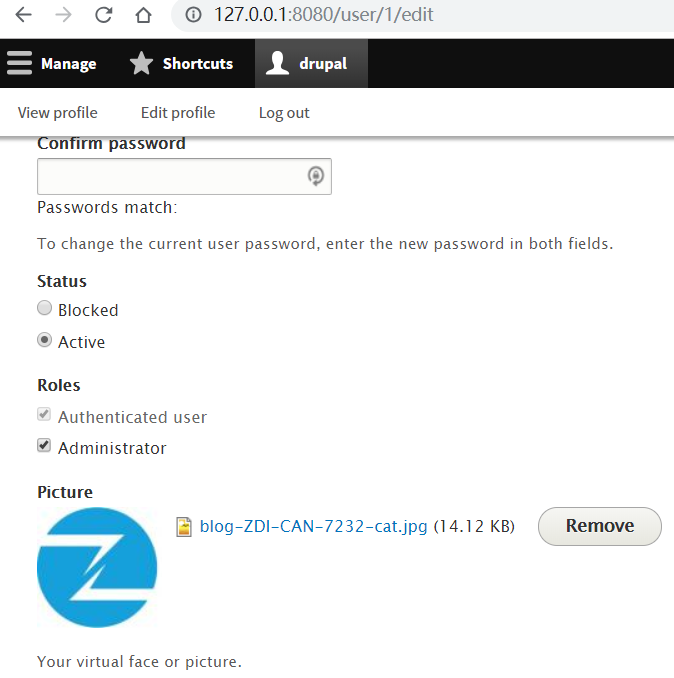
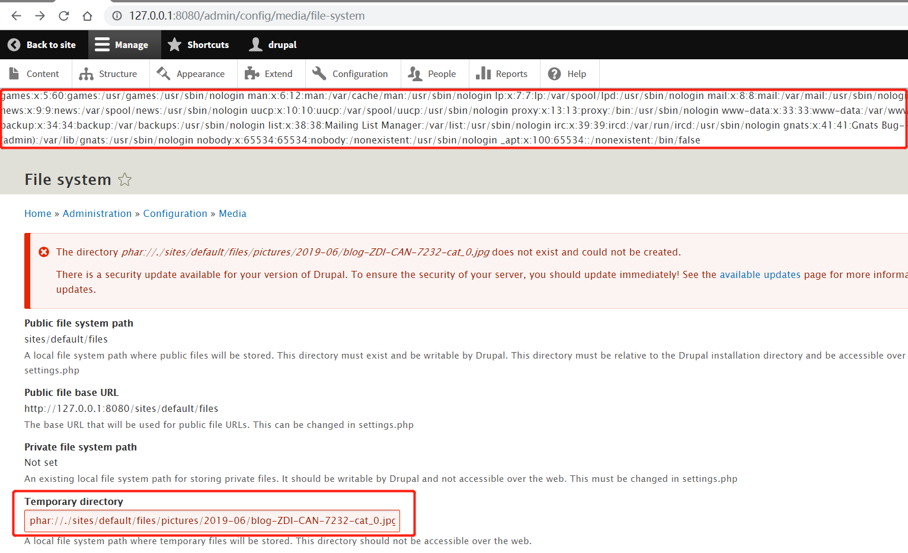

Drupal远程代码执行漏洞（CVE-2019-6339）¶
Drupal是一个使用PHP编写的免费开源的Web内容管理框架。
在Drupal 8.6.6之前的8.6.x版本和8.5.9之前的8.5.x版本中存在远程代码执行漏洞。该漏洞是由于文件系统服务中PHAR反序列化处理不当导致的，可以导致远程代码执行。
参考链接：
- https://www.drupal.org/sa-core-2019-002
- https://www.zerodayinitiative.com/blog/2019/4/11/a-series-of-unfortunate-images-drupal-1-click-to-rce-exploit-chain-detailed
- https://paper.seebug.org/897/
环境搭建¶
执行如下命令启动一个存在漏洞的Drupal 8.5.0服务器：
docker compose up -d
环境启动后，访问http://your-ip:8080/将会看到Drupal的安装页面。按照默认配置完成安装步骤。由于环境中没有MySQL，可以选择SQLite作为数据库。
漏洞复现¶
首先，以管理员身份登录并上传头像。头像图片需要是特制的PoC文件（可以参考thezdi/PoC获取PoC）：

Drupal默认将上传的图片存储在/sites/default/files/pictures/<YYYY-MM>/目录下，并保留其原始文件名。这个信息对于漏洞利用很重要。
访问http://127.0.0.1:8080/admin/config/media/file-system，在"临时目录"字段中输入之前上传的图片路径，例如：
phar://./sites/default/files/pictures/2019-06/blog-ZDI-CAN-7232-cat_0.jpg
保存配置以触发漏洞。恶意代码的执行将证实漏洞利用成功：
